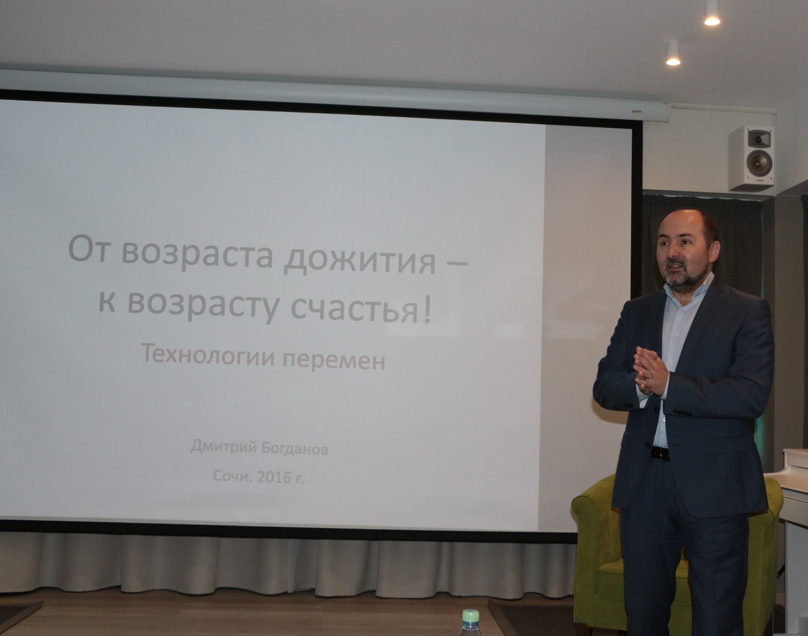
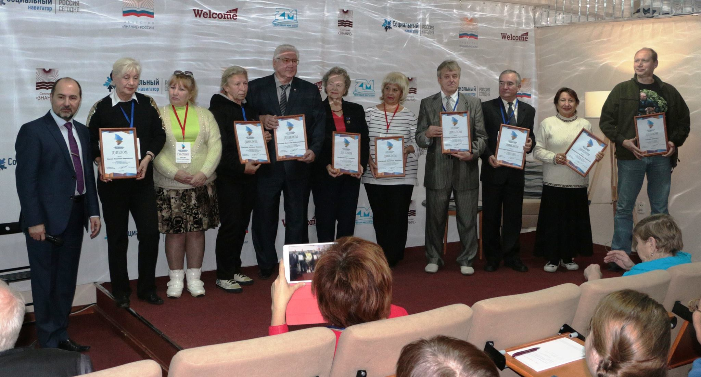
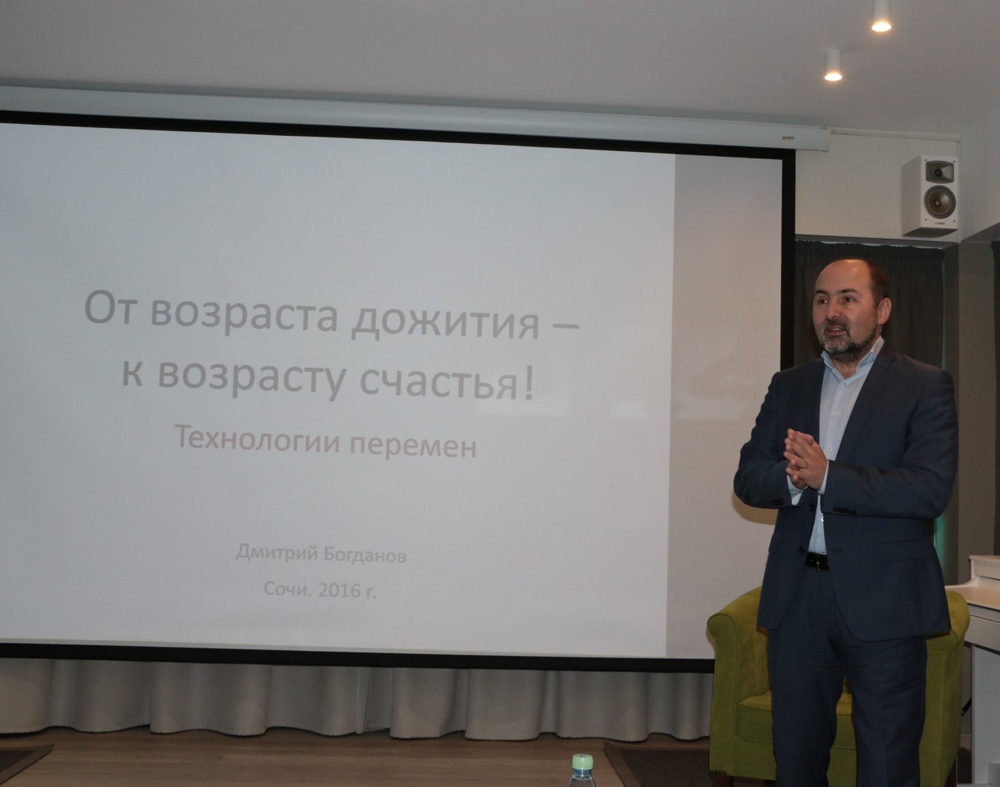
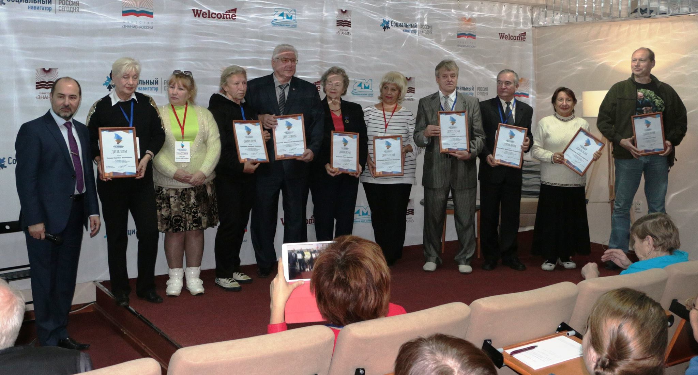

II Слет народных университетов
 



С 15 по 18 ноября 2016 года в Сочи на базе санатория «Знание» проходил II Слет народных университетов, посвященный вопросам жизни старшего поколения. В нем приняли участие более 30 регионов России.
Главная цель этого общероссийского форума – способствовать тому, чтобы пенсионный возраст становился не «возрастом дожития», а «возрастом счастья». В том или ином виде дискуссии на данную тему проходят на многих площадках. Однако уникальность сочинского формата в том, что он объединил специалистов, работающих с пожилыми – руководителей народных университетов и их слушателей – социально активных пенсионеров, некоторые из которых приближаются к 90-летнему юбилею.
Приветствие от Первого зам.председателя ГД РФ И.И. Мельникова и Первого зам.председателя Комитета ГД по образованию О.Н. Смолина огласил советник народного депутата, главный редактор журнала «Философские науки» Х.Э. Мариносян.
Высокую интеллектуальную планку форума задал уже первый спикер Дмитрий Рогозин – директор Центра методологии федеративных исследований РАНХиГС при Президенте России, который раскрыл панораму жизни и интересов пожилых людей в зеркале социологии. В последнее время в различных регионах он интервьюировал граждан, достигших 100-летнего рубежа, и их реальный портрет серьезно отличается от того, что мы привыкли себе представлять.
Анализ социолога был дополнен обзором лучших практик поддержки старшего поколения, которое сделала руководитель альянса «Серебряный возраст» Татьяна Акимова.
Среди выступивших директор Нижегородской региональной общественной организации «Забота», эксперт конкурса социальных проектов Наталья Симонова (Социальные проекты. Как зарабатывать), бизнес тренер Открытого Университета Великобритании Лилия Маслова (Как добиваться успехов в жизни с помощью правильных коммуникаций). Большой интерес собравшихся вызвало выступление на тему «Культура старости в современном мире» Светланы Файн – координатора существующей уже не одно десятилетие международной организации «Друзья общины святого Эгидия». Блестяще выступил по теме «От возраста дожития – к возрасту счастья: технологии перемен» Председатель Правления народного университета города- курорта Сочи Дмитрий Богданов (он же генеральный директор СКК «Знание» и председатель оргкомитета Слета).
В принятой Слетом резолюции одобрен опыт многих регионов, импульс для развития которых дал предыдущий слет ноября 2015 года. Это, в частности, продолжение Костромской организацией Общества «Знание» опыта устной истории.